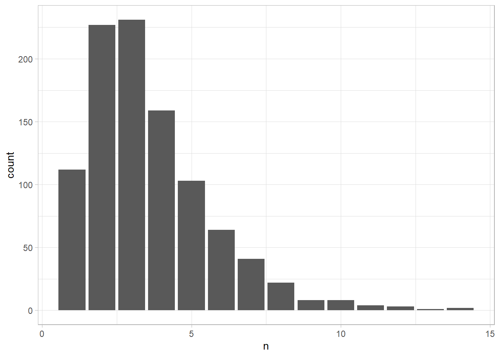

Last updated: 2020-05-23
Checks: 7 0
Knit directory: 034_jsv-data-is-plural/
This reproducible R Markdown analysis was created with workflowr (version 1.6.2). The Checks tab describes the reproducibility checks that were applied when the results were created. The Past versions tab lists the development history.
Great! Since the R Markdown file has been committed to the Git repository, you know the exact version of the code that produced these results.
Great job! The global environment was empty. Objects defined in the global environment can affect the analysis in your R Markdown file in unknown ways. For reproduciblity it’s best to always run the code in an empty environment.
The command set.seed(20200510) was run prior to running the code in the R Markdown file. Setting a seed ensures that any results that rely on randomness, e.g. subsampling or permutations, are reproducible.
Great job! Recording the operating system, R version, and package versions is critical for reproducibility.
Nice! There were no cached chunks for this analysis, so you can be confident that you successfully produced the results during this run.
Great job! Using relative paths to the files within your workflowr project makes it easier to run your code on other machines.
Great! You are using Git for version control. Tracking code development and connecting the code version to the results is critical for reproducibility.
The results in this page were generated with repository version 9e05f1a. See the Past versions tab to see a history of the changes made to the R Markdown and HTML files.
Note that you need to be careful to ensure that all relevant files for the analysis have been committed to Git prior to generating the results (you can use wflow_publish or wflow_git_commit). workflowr only checks the R Markdown file, but you know if there are other scripts or data files that it depends on. Below is the status of the Git repository when the results were generated:
Ignored files:
Ignored: .Rhistory
Ignored: .Rproj.user/
Untracked files:
Untracked: code/fnc_should_upate.R
Untracked: data/dip_cached.rds
Untracked: data/dip_glance_cached.rds
Untracked: data/dip_links.rds
Untracked: data/dip_texts.rds
Unstaged changes:
Modified: README.md
Deleted: analysis/03_exploration_data.Rmd
Note that any generated files, e.g. HTML, png, CSS, etc., are not included in this status report because it is ok for generated content to have uncommitted changes.
These are the previous versions of the repository in which changes were made to the R Markdown (analysis/02_reorganize_data.Rmd) and HTML (docs/02_reorganize_data.html) files. If you’ve configured a remote Git repository (see ?wflow_git_remote), click on the hyperlinks in the table below to view the files as they were in that past version.
| File | Version | Author | Date | Message |
|---|---|---|---|---|
| Rmd | 9e05f1a | ogorodriguez | 2020-05-23 | making sure all is updated with recent changes |
| html | 60e0b0a | ogorodriguez | 2020-05-19 | Build site. |
| Rmd | aeb8e9c | ogorodriguez | 2020-05-19 | wflow_publish("analysis/*") |
| html | 7d8505e | ogorodriguez | 2020-05-17 | Build site. |
| Rmd | 337faac | ogorodriguez | 2020-05-17 | publish section 02 reorganize data |
The package googlespreadsheets4 is used to read the data from the Data is Plural archive. This package is causing some conflict with workflowr build project function. A cached version of the file will be used. This file is saved as .rds file in the data folder of this project. It will help to see the date of the cached file to see if it is necessary an update. This update will require going back to the introduction file, comment out the sheet reading sections and get it to update.
# Check the date the cached file was created
date_cached_created <- file.info(here::here("data","dip_cached.rds"))$ctime %>%
lubridate::date()
date_cached_created
#> [1] "2020-05-12"# Check when the file was modified
date_cached_modified <- file.info(here::here("data","dip_cached.rds"))$mtime %>%
lubridate::date()
date_cached_modified
#> [1] "2020-05-16"The newsletter is sent weekly. A good rule of thumb can be if the cached file is more than 15 days old, then it is recommended to update.
days_since_cached <- lubridate::today() - date_cached_modified
days_since_cached
#> Time difference of 7 daysWe can have the system tell us if an update is recommended.
# Source the function should_update from the /code folder
source(here::here("code", "fnc_should_upate.R"))# Check if an update is required.
should_update(days_since_cached)
#> [1] "No update required"If an update is required, it will be necessery to run the code indicated in section 01 Introduction.
The purpose here is to load the data and do the corresponding cleaning tasks if needed.
# Read in the corresponding cached file in .rds format
dip_raw <- read_rds(here::here("data", "dip_cached.rds"))# Preview the 10 most recent dataset suggestions by Jeremy Singer-Vine
dip_raw %>% tail(10)
#> # A tibble: 10 x 6
#> edition position headline text links hattips
#> <chr> <dbl> <chr> <chr> <chr> <chr>
#> 1 2020.05~ 1 Coronavirus~ Last week, th~ "https://tiny~ <NA>
#> 2 2020.05~ 2 COVID-19 in~ The Marshall ~ "https://www.~ <NA>
#> 3 2020.05~ 3 Essential N~ New York City~ "https://www1~ https://tinylet~
#> 4 2020.05~ 4 Space dolla~ The Planetary~ "https://www.~ https://twitter~
#> 5 2020.05~ 5 Love Island. Developer adv~ "https://twit~ https://twitter~
#> 6 2020.05~ 1 Employee pr~ The UN Intern~ "https://eple~ <NA>
#> 7 2020.05~ 2 COVID stimu~ The nonprofit~ "https://www.~ <NA>
#> 8 2020.05~ 3 National wi~ Since the pas~ "https://wild~ <NA>
#> 9 2020.05~ 4 EU legislat~ Computer scie~ "https://vict~ <NA>
#> 10 2020.05~ 5 Millions of~ Iowa’s Alcoho~ "https://data~ https://twitter~By looking at the resulting dip_raw data frame, we can see that most columns are character columns when obviously the edition column correspond to a date column. Also, the position column is not necessarily a numeric column but actually a factor column that will help identify which type of entries are first, which seconde, etc.
dip_raw_fix01 <- dip_raw %>%
mutate(edition = lubridate::ymd(edition),
position_fct = as_factor(position),
month = lubridate::month(edition, label = TRUE)) %>%
rename(position_dbl = position) %>%
select(edition, month, position_dbl, position_fct, everything())
dip_raw_fix01
#> # A tibble: 985 x 8
#> edition month position_dbl position_fct headline text links hattips
#> <date> <ord> <dbl> <fct> <chr> <chr> <chr> <chr>
#> 1 2015-10-21 oct 1 1 Every pla~ "Somet~ "http~ https:/~
#> 2 2015-10-21 oct 2 2 “There’s ~ "The H~ "http~ <NA>
#> 3 2015-10-21 oct 3 3 What poli~ "The P~ "http~ <NA>
#> 4 2015-10-21 oct 4 4 How often~ "The W~ "http~ <NA>
#> 5 2015-10-21 oct 5 5 Four year~ "WNYC,~ "http~ https:/~
#> 6 2015-10-28 oct 1 1 Data-sham~ "If yo~ "http~ https:/~
#> 7 2015-10-28 oct 2 2 The demog~ "This ~ "http~ <NA>
#> 8 2015-10-28 oct 3 3 Where do ~ "Most ~ "http~ https:/~
#> 9 2015-10-28 oct 4 4 Finally, ~ "Prior~ "http~ https:/~
#> 10 2015-10-28 oct 5 5 Porn. "Sexua~ "http~ <NA>
#> # ... with 975 more rowsThere was a problem regarding the encoding of the text in the columns headline and text. It is important to make sure that a good working version of the gargle package is used so it can sync with the googlesheets4 package. These links will help solve the issue: here, and here.
Now we can get a glimpse and skim of the dataset.
dip_raw_fix01 %>%
glimpse()
#> Rows: 985
#> Columns: 8
#> $ edition <date> 2015-10-21, 2015-10-21, 2015-10-21, 2015-10-21, 2015-...
#> $ month <ord> oct, oct, oct, oct, oct, oct, oct, oct, oct, oct, nov,...
#> $ position_dbl <dbl> 1, 2, 3, 4, 5, 1, 2, 3, 4, 5, 1, 2, 3, 4, 5, 1, 2, 3, ...
#> $ position_fct <fct> 1, 2, 3, 4, 5, 1, 2, 3, 4, 5, 1, 2, 3, 4, 5, 1, 2, 3, ...
#> $ headline <chr> "Every place name in the United States.", "“There’s fi...
#> $ text <chr> "Sometimes, bureaucracy creates poetry. Since 1890, th...
#> $ links <chr> "http://geonames.usgs.gov/index.html\nhttp://geonames....
#> $ hattips <chr> "https://twitter.com/emilymbadger/status/6539828513863...It shows again the new classes of the fix we did to the raw data
skim
dip_raw_fix01 %>%
skimr::skim()| Name | Piped data |
| Number of rows | 985 |
| Number of columns | 8 |
| _______________________ | |
| Column type frequency: | |
| character | 4 |
| Date | 1 |
| factor | 2 |
| numeric | 1 |
| ________________________ | |
| Group variables | None |
Variable type: character
| skim_variable | n_missing | complete_rate | min | max | empty | n_unique | whitespace |
|---|---|---|---|---|---|---|---|
| headline | 0 | 1.00 | 4 | 85 | 0 | 981 | 0 |
| text | 0 | 1.00 | 32 | 1045 | 0 | 985 | 0 |
| links | 0 | 1.00 | 16 | 1466 | 0 | 985 | 0 |
| hattips | 386 | 0.61 | 20 | 258 | 0 | 546 | 0 |
Variable type: Date
| skim_variable | n_missing | complete_rate | min | max | median | n_unique |
|---|---|---|---|---|---|---|
| edition | 0 | 1 | 2015-10-21 | 2020-05-13 | 2017-12-27 | 197 |
Variable type: factor
| skim_variable | n_missing | complete_rate | ordered | n_unique | top_counts |
|---|---|---|---|---|---|
| month | 0 | 1 | TRUE | 12 | abr: 100, ene: 95, feb: 90, mar: 90 |
| position_fct | 0 | 1 | FALSE | 5 | 1: 197, 2: 197, 3: 197, 4: 197 |
Variable type: numeric
| skim_variable | n_missing | complete_rate | mean | sd | p0 | p25 | p50 | p75 | p100 | hist |
|---|---|---|---|---|---|---|---|---|---|---|
| position_dbl | 0 | 1 | 3 | 1.41 | 1 | 2 | 3 | 4 | 5 | ▇▇▇▇▇ |
Not much info of value but it confirms that the pattern is the send 5 dataset recommendations in each newsletter ordered from one to 5. Doing a quick check the newsletter is sent every wednesday.
As we can see the data is not yet tidy enough. It has a row per each data set recommendation, however, for each data set recommendation in the text column there is most of time more than one link recommended. The idea would be to have each link in each corresponding row per dataset recommendation.
We need to find a way to expand that row so that we can each link separated. Grouping by text column will help in analysis then. Using separate_rows() from tidyr can help us separate the rows by the carriage return.
We will create one group for links analysis.
dip_links <- dip_raw_fix01 %>%
tidyr::separate_rows(links, sep = "\n", convert = FALSE)
dip_links
#> # A tibble: 3,530 x 8
#> edition month position_dbl position_fct headline text links hattips
#> <date> <ord> <dbl> <fct> <chr> <chr> <chr> <chr>
#> 1 2015-10-21 oct 1 1 Every pla~ "Somet~ http:~ https:/~
#> 2 2015-10-21 oct 1 1 Every pla~ "Somet~ http:~ https:/~
#> 3 2015-10-21 oct 1 1 Every pla~ "Somet~ https~ https:/~
#> 4 2015-10-21 oct 2 2 “There’s ~ "The H~ http:~ <NA>
#> 5 2015-10-21 oct 2 2 “There’s ~ "The H~ https~ <NA>
#> 6 2015-10-21 oct 3 3 What poli~ "The P~ https~ <NA>
#> 7 2015-10-21 oct 3 3 What poli~ "The P~ http:~ <NA>
#> 8 2015-10-21 oct 4 4 How often~ "The W~ https~ <NA>
#> 9 2015-10-21 oct 5 5 Four year~ "WNYC,~ https~ https:/~
#> 10 2015-10-21 oct 5 5 Four year~ "WNYC,~ http:~ https:/~
#> # ... with 3,520 more rowsAnd one set for text analysis. One thing about the text column is many of them end up with a hat tip. A hat tip is a mention to the person that pointed the author to the data set in turn. It will be interesting to have a column where the hattips are indicated.
dip_texts <- dip_raw_fix01 %>%
tidyr::separate(text, into = c("text", "hattip_name"), sep = "(\\[h/t)", remove = FALSE) %>%
mutate(hattip_name = str_remove_all(hattip_name, "]"))
dip_texts
#> # A tibble: 985 x 9
#> edition month position_dbl position_fct headline links text hattip_name
#> <date> <ord> <dbl> <fct> <chr> <chr> <chr> <chr>
#> 1 2015-10-21 oct 1 1 Every p~ "htt~ "Som~ " @emilymb~
#> 2 2015-10-21 oct 2 2 “There’~ "htt~ "The~ <NA>
#> 3 2015-10-21 oct 3 3 What po~ "htt~ "The~ <NA>
#> 4 2015-10-21 oct 4 4 How oft~ "htt~ "The~ <NA>
#> 5 2015-10-21 oct 5 5 Four ye~ "htt~ "WNY~ " @veltman"
#> 6 2015-10-28 oct 1 1 Data-sh~ "htt~ "If ~ " Shale Cr~
#> 7 2015-10-28 oct 2 2 The dem~ "htt~ "Thi~ <NA>
#> 8 2015-10-28 oct 3 3 Where d~ "htt~ "Mos~ " Steven R~
#> 9 2015-10-28 oct 4 4 Finally~ "htt~ "Pri~ " Noah Vel~
#> 10 2015-10-28 oct 5 5 Porn. "htt~ "Sex~ <NA>
#> # ... with 975 more rows, and 1 more variable: hattips <chr>Now let’s save both data frames and let’s do some analysis with them.
write_rds(dip_links, here::here("data", "dip_links.rds"))
write_rds(dip_texts, here::here("data", "dip_texts.rds"))dip_links %>%
select(edition, text, links) %>%
count(text, sort = FALSE) %>%
ggplot(aes(n)) +
geom_histogram(stat = "count")
sessionInfo()
#> R version 3.6.1 (2019-07-05)
#> Platform: x86_64-w64-mingw32/x64 (64-bit)
#> Running under: Windows 10 x64 (build 18362)
#>
#> Matrix products: default
#>
#> locale:
#> [1] LC_COLLATE=Spanish_Spain.1252 LC_CTYPE=Spanish_Spain.1252
#> [3] LC_MONETARY=Spanish_Spain.1252 LC_NUMERIC=C
#> [5] LC_TIME=Spanish_Spain.1252
#>
#> attached base packages:
#> [1] stats graphics grDevices utils datasets methods base
#>
#> other attached packages:
#> [1] forcats_0.5.0 stringr_1.4.0 dplyr_0.8.5 purrr_0.3.3
#> [5] readr_1.3.1 tidyr_1.0.2 tibble_3.0.0 tidyverse_1.3.0
#> [9] ggplot2_3.3.0
#>
#> loaded via a namespace (and not attached):
#> [1] Rcpp_1.0.4.6 lubridate_1.7.8 here_0.1 lattice_0.20-40
#> [5] assertthat_0.2.1 rprojroot_1.3-2 digest_0.6.25 utf8_1.1.4
#> [9] R6_2.4.1 cellranger_1.1.0 repr_1.1.0 backports_1.1.6
#> [13] reprex_0.3.0 evaluate_0.14 highr_0.8 httr_1.4.1
#> [17] pillar_1.4.3 rlang_0.4.6 readxl_1.3.1 rstudioapi_0.11
#> [21] whisker_0.4 rmarkdown_2.1 labeling_0.3 munsell_0.5.0
#> [25] broom_0.5.5 compiler_3.6.1 httpuv_1.5.2 modelr_0.1.6
#> [29] xfun_0.12 pkgconfig_2.0.3 base64enc_0.1-3 htmltools_0.4.0
#> [33] tidyselect_1.0.0 workflowr_1.6.2 fansi_0.4.0 crayon_1.3.4
#> [37] dbplyr_1.4.2 withr_2.2.0 later_1.0.0 grid_3.6.1
#> [41] nlme_3.1-144 jsonlite_1.6.1 gtable_0.3.0 lifecycle_0.2.0
#> [45] DBI_1.1.0 git2r_0.26.1 magrittr_1.5 scales_1.1.0
#> [49] cli_2.0.2 stringi_1.4.6 farver_2.0.3 fs_1.4.1
#> [53] promises_1.1.0 skimr_2.1 xml2_1.3.1 ellipsis_0.3.0
#> [57] generics_0.0.2 vctrs_0.2.4 tools_3.6.1 glue_1.4.0
#> [61] hms_0.5.3 yaml_2.2.1 colorspace_1.4-1 rvest_0.3.5
#> [65] knitr_1.28 haven_2.2.0